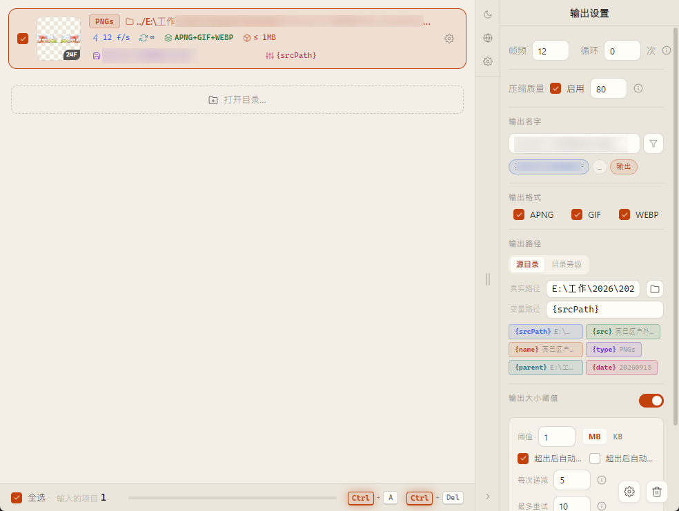
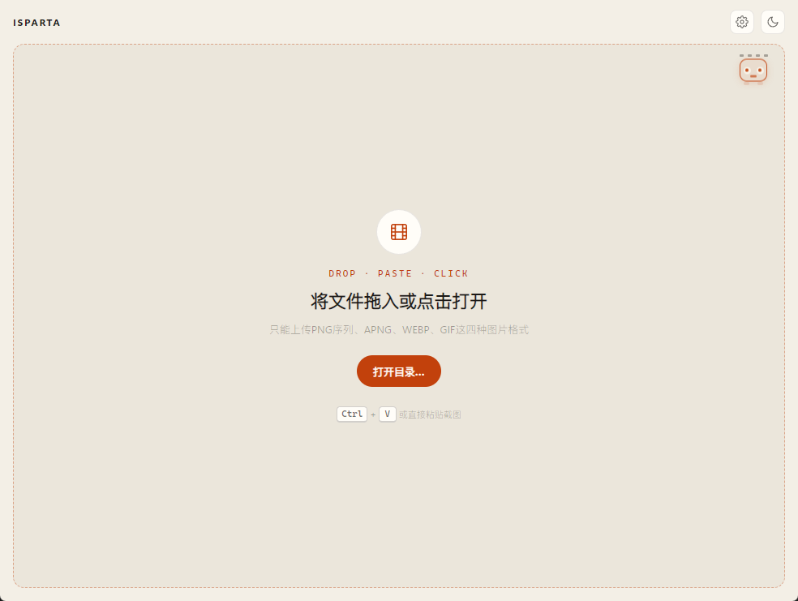
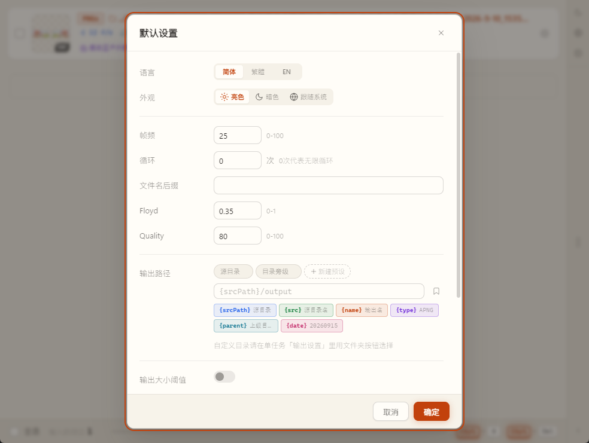

运行时
Electron 28 · 安全隔离
contextIsolation、sandbox，能力走 IPC 白名单，不再依赖 remote / 裸 Node。
01 · WORKBENCH
任务卡汇总类型、目录、帧频循环、格式、阈值、输出名与路径模板。选中任务后，下方输出设置与应用右栏一致。
源类型
输出格式
当前路径：PNG 序列 → APNG
02 · SIZE GATE
导出 APNG / GIF / WebP 后检查体积。若超过阈值，自动从母版按步长降质量重编码，直到进入阈值或达到最大重试次数。主要为开发调试时控制反复导出的资源体积。
03 · NAMING
输出设置里的命名能力：长名自动拆成可取消的字词胶囊，一键只留文字；输出目录用变量拼模板，真实路径实时展开。
输出名字
输出路径
变量路径
真实路径
04 · REAL UI
应用真实界面：空状态导入、任务胶片列表与输出设置、默认设置（主题 / 路径模板 / 大小阈值）。
iSparta-next 工作台 与仓库 public/screenshot/ 同源 · 桌面 Electron 实拍



05 · GET IT
安装包由 GitHub Actions 构建。macOS 未签名，首次打开见 Release 说明。
06 · WHY NEXT
原版长期停更；本仓库在社区 fork 基建上重写前后端，而不是只修几个按钮。
运行时
contextIsolation、sandbox，能力走 IPC 白名单，不再依赖 remote / 裸 Node。
界面
两栏任务列表、亮暗主题、前后对比；不再绑定 Element UI。
导出
大小阈值自动重压；路径变量；输出名拆字拼装。
批量
多选、粘贴导入、全局默认设置、四态进度与批量开始。
依赖
libwebp 1.5（修 CVE-2023-4863）；受控 execFile，降低注入风险。
发版
GitHub Actions 构建 Win / macOS / Linux，自动版本与 Release Notes。
07 · LINEAGE
感谢原作者与每一位社区维护者。本仓库站在他们肩膀上继续改。
原版 · 长期停更
经典 APNG / WebP 桌面转换工具。Electron 与依赖停在旧线，大量历史 Issue 无人跟进，安全补丁跟不上——这是 fork 浪潮的起点。
基建 fork · 本仓库直接上游
libwebp 1.5（修 CVE-2023-4863）、Electron 6→13、Vue CLI 4、execFile 防注入、存储/转换锁修复、迁到 GitHub Actions。
当前 · iSparta-next
在 bigxixi 基建上再次 fork：Electron 28 + sandbox / IPC，弃用 Element UI 重做工作台，新增大小阈值、路径变量、拆字命名、前后对比等；三端 CI 发版。